COMPINT · curso 3
4. Análisis Semántico
Podemos entender la semántica de un lenguaje de programación como el conjunto de reglas que especifican el significado de las sentencias sintácticamente correctas.
El análisis semántico se puede llevar a cabo como una tarea de análisis independiente de las demás o bien paralelo al análisis sintáctico.
Como salida del análisis semántico se genera automáticamente una representación en forma de código intermedio que pasa a las fases de síntesis de la compilación.
4.1 Análisis Semántico
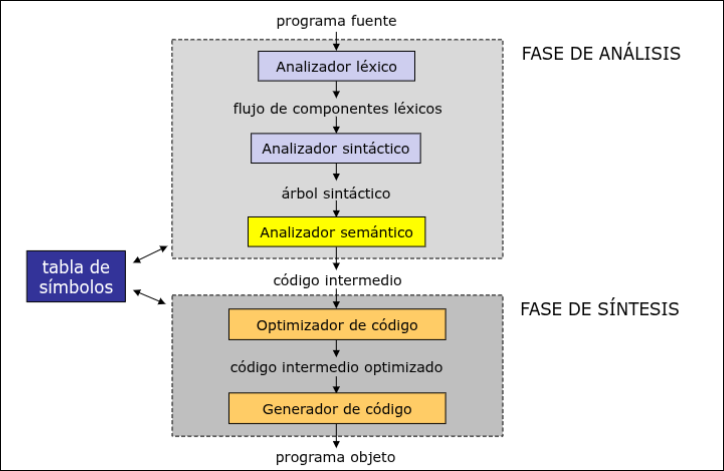
Cada símbolo de la gramática adquiere un determinado significado según el contexto de aparición en el código fuente. Para que los símbolos puedan tener significado, es necesario aumentar la gramática añadiendo un conjunto de atributos a los símbolos y unas acciones semánticas a las reglas sintácticas.
La especificación de la semántica se puede realizar mediante:
- Lenguajes especiales de especificación: como VMD (para PL/1), Anna (para Ada), etc.
- Gramáticas de atributos: llamaremos atributo de un símbolo de la gramática a todo ítem de información añadido al árbol de derivación durante el análisis semántico.
4.1.1 Gramáticas de Atributos
Una gramática de atributos es toda aquella gramática independiente del contexto a la que se añade un sistema de atributos.
Un sistema de atributos está formado por:
- Un conjunto de atributos semánticos: un atributo de un símbolo
es una variable que representa una determinada característica de que puede tomar un valor de entre un conjunto, finito o no, de valores posibles. Denotaremos el atributo del símbolo como - Un conjunto de acciones semánticas: una acción semántica es un algoritmo asociado a una regla de la gramática cuyo objetivo es calcular el valor de alguno de los atributos de los símbolos de dicha regla.
4.1.2 Propagación de Atributos
Llamamos propagación al cálculo del valor de un atributo en función del valor de otros. La propagación se realiza siguiendo el árbol de derivación que devuelve el análisis sintáctico, e incluso se puede desarrollar al mismo tiempo.
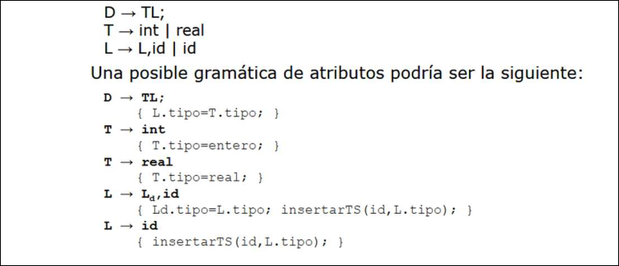
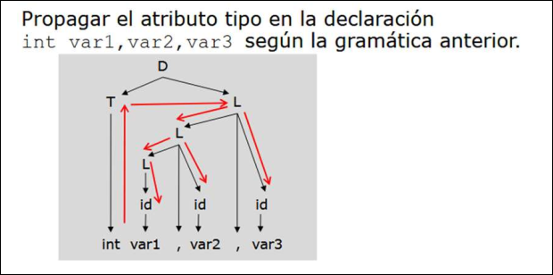
Según los símbolos que intervienen en una acción semántica, para calcular el valor del atributos de un símbolo, hablamos de dos tipos de atributos:
-
Atributos sintetizados: son atributos asociados a no terminales de la parte izquierda de una regla de sustitución
- Se calculan a partir de los nodos hijos del subárbol en que aparecen
- La información recorre el árbol verticalmente
-
Atributos heredados: son atributos asociados a símbolos de la parte derecha de una sustitución.
- Se calculan a partir de los atributos del nodo padre y de los nodos hermanos dentro de un mismo subárbol
- La información recorre el árbol horizontalmente
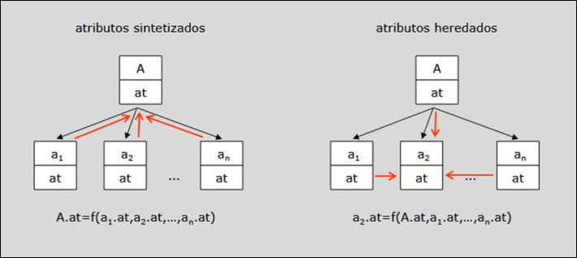
4.1.3 Grafo de Dependencias
La propagación se ha de realizar siguiendo el orden implícito en la dependencia que existe entre los atributos, no podemos evaluar una regla semántica antes de disponer de todos los atributos involucrados.
Este orden se representa mediante un grado de dependencias acíclico y dirigido, para cuya construcción representamos las dependencias entre atributos de la forma
- Se evalúan los nodos a los que no llega ningún arco y se marcan como calculados
- Se evalúan los nodos en los que todos los arcos proceden de nodos marcados y se marcan como calculados
- Continuamos hasta que no quedan más nodos por evaluar
4.1.4 Verificación de Tipos
La verificación de tipos asegura que el tipo de cada una de las construcciones del código fuente coincide con lo previsto en el diseño de la gramática.
Un sistema de tipos es una serie de reglas que permiten asignar tipos a las distintas construcciones del código fuente:
- En primer lugar, a los tipos básicos
- A continuación, a expresiones de tipos para matrices, estructuras, punteros, etc
Estas reglas se incluyen en el árbol de análisis sintáctico, de un modo similar a las de asignación y propagación de atributos.
Según la verificación de tipos se distingue ente lenguajes fuerte o débilmente tipificados y lenguajes con verificación estática o dinámica de tipos.
-
Los lenguajes fuertemente tipificados serían aquellos en los que no es posible un error de tipo en tiempo de ejecución (Java)
-
Los lenguajes débilmente tipificados serían aquellos en los que es posible usar un valor de un tipo como si fuese de otro tipo (C)
-
Los lenguajes con tipificación estática son aquellos que realizan la verificación de los tipos en tiempo de compilación (Java)
-
Los lenguajes con tipificación dinámica son aquellos que realizan la verificación de tipos en tiempo de ejecución (Python)
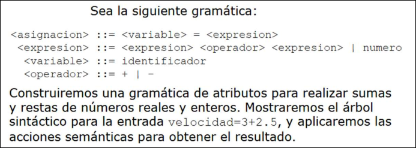
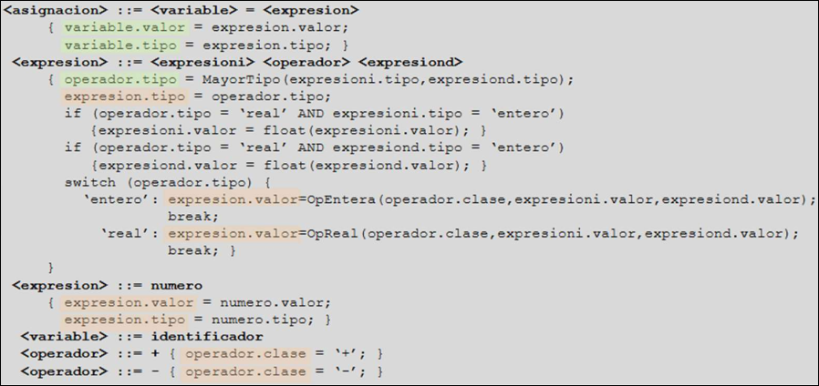
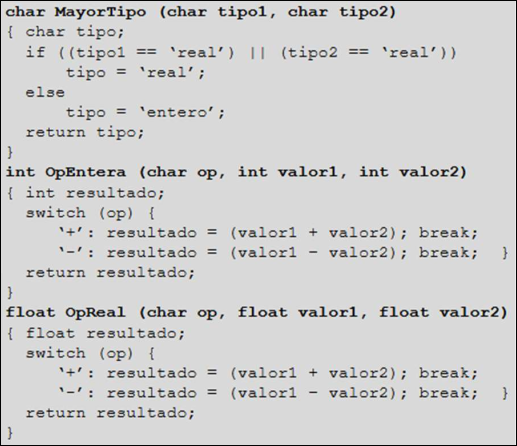
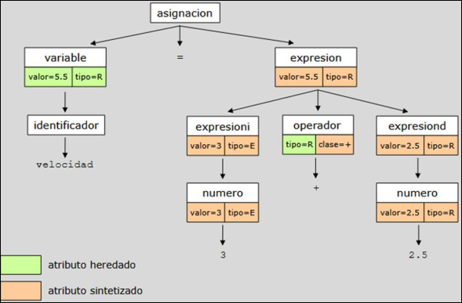
4.2 Generación de Código Intermedio
Una representación intermedia es una estructura de datos que representa al código fuente durante el proceso de traducción a código objeto. El árbol de análisis sintáctico y la TS son representaciones del código fuente, pero se parecen muy poco al código ejecutable. La notación postfija también es una representación intermedia utilizada a menudo en la traducción de expresiones.
4.2.1 Código de Tres Direcciones
Se define como una secuencia de instrucciones de la forma
Existen muchos tipos de códigos de tres direcciones, pero todos se desarrollan para algún tipo de máquina virtual.
Es una linealización del árbol de análisis sintáctico donde se asignan nombres temporales a los nodos internos. El proceso de traducción del código de tres direcciones a código máquina suele ser bastante sencillo.
Para poder representar construcciones de un lenguaje de alto nivel, es necesario introducir en el código intermedio:
- Instrucciones de asignación con operador binario, donde
es una operación aritmética o lógica: - Instrucciones de asignación con operador unitario, donde op es una operación de opuesto, negación, desplazamiento o conversión de tipo:
- Instrucciones de copia:
- El salto condicional, donde se utiliza una etiqueta
para indicar la siguiente instrucción a ejecutar: - El salto condicional, donde se ejecuta la instrucción
o la siguiente en la secuencia en función del resultado de un operador de relación: - Llamadas a procedimientos, de la forma
: - y devoluciones mediante la instrucción
- Asignaciones con índices:
- Asignaciones de direcciones y punteros:
Un conjunto de operaodres pequeño es más fácil de implementar en una máquina objeto. Sin embargo, si resulta ser un conjunto limitado puede obligar a generar largas secuencias de instrucciones para algunas construcciones del lenguaje fuente.
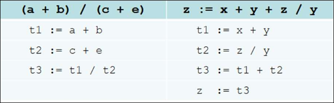
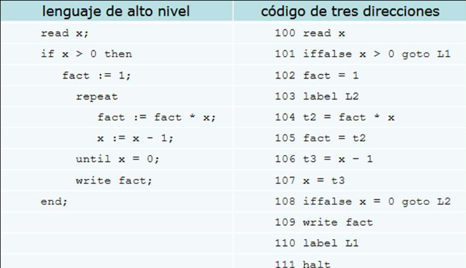
4.2.2 Implementaciones
El código intermedio suele almacenarse como una lista enlazada de registros, donde cada registro representa una instrucción. Existen dos implementaciones:
- Un cuádruple es una estructura de tipo registro con cuatro campos:
op,result,arg1yarg2. Las instrucciones que no usan todos los campos dejan vacíos los que no se utilizan. La instrucciónse representa como ( suma,x,y,z) - Un triple es una simplificación en la que cada instrucción representa a una variable temporal, utilizando así sólo tres campos:
op, arg1, arg2. La instrucciónse representa como 01(suma, y,z)y02(asgina,x,(01)). Está en desventaja respecto a los cuádruples cuando la optimización de código supone su reorganización ya que si modificamos sus posiciones tendremos que modificar sus referencias.- Para evitar este problema se introduce los triples indirectos: una lista de punteros a triples que evita modificar las posiciones de los triples. Cualquier optimización de código se realiza sobre esta lista.
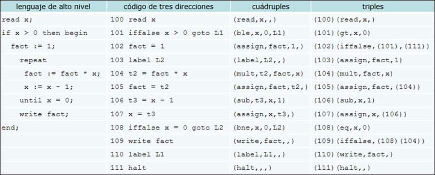
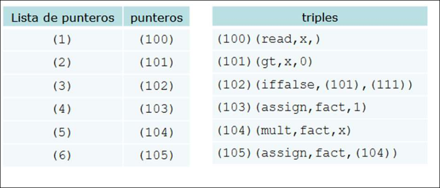